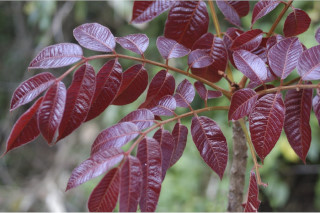
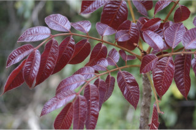

Large trees, buttressed, up to 30 m tall.
ಬೃಹತ್ ವೃಕ್ಷಗಳಾದ ಈ ಪ್ರಭೇದ ಆನಿಕೆಗಳನ್ನೊಂಡು 30 ಮೀ. ವರೆಗಿನ ಎತ್ತರದವರೆಗೂ ಬೆಳೆಯುತ್ತವೆ.
30 മീറ്റര് വരെ ഉയരത്തില് വളരുന്ന, വപ്രമൂലത്തോട് കൂടിയ, വന്മരങ്ങള്.
பெரிய மரம், தாங்கு வேர் (பட்ரஸ்டு) கொண்டது, 30 மீ. உயரம் வரை வளரக்கூடியது.
Trunk clear bole; bark brownish, lenticellate.
ಸ್ಪಷ್ಟವಾದ ಬುಡವುಳ್ಳಕಾಂಡವನ್ನು ಈ ಸಸ್ಯ ಹೊಂದಿರುತ್ತದೆ; ತೊಗಟೆ ಕಡು ಕಂದು ಬಣ್ಣದಲ್ಲಿದ್ದು, ವಾಯುವಿನಿಮಯ ಬೆಂಡು ಸಮೇತವಾಗಿರುತ್ತದೆ.
കൃത്യമായ തായ്ത്തടി; തവിട്ട് നിറത്തിലുളള പുറംതൊലി, ശ്വസനരന്ധ്രങ്ങളോട് കൂടിയതാണ്.
தண்டு குறுக்குவெட்டுத் தோற்றத்தில் வளையமானது, மரத்தின் பட்டை ப்ரவுன் நிறம், லெண்டிசெல்லேட் கொண்டது.
Branchlets terete, ferruginous tomentose.
ಕಿರುಕೊಂಬೆಗಳು ದುಂಡಾಗಿದ್ದು ತುಕ್ಕು ವರ್ಣದ ದಟ್ಟ ಮೃದು ತುಪ್ಪಳದಿಂದ ಕೂಡಿರುತ್ತದೆ.
ഉപശാഖകള് ഉരുണ്ടതാണ്, തുരുമ്പന് രോമങ്ങള് നിറഞ്ഞതുമാണ്.
சிறிய நுனிக்கிளைகள் குறுக்குவெட்டுத் தோற்றத்தில் வளையமானது, பொன் நிறமான அடர்ந்த பின்னிய உரோமங்களுடையது.
Resin dark brown to black oozing from cut end of trunk.
ಕಾಂಡದ ಕತ್ತರಿಸಿದ ತುದಿಗಳಿಂದ ಹೊಮ್ಮುವ ಅಂಟು ದ್ರವ ಕಡು ಕಂದು ಬಣ್ಣದಿಂದ ಕಪ್ಪು ಬಣ್ಣದ್ದಾಗಿರುತ್ತದೆ.
തടിയിലെ മുറിവുകളില് നിന്നൂറുന്ന സ്രവത്തിന് കടും തവിട്ട് നിറമോ കറുപ്പ്നിറമോ ആണ്.
பிசின் (ரெசின்ஸ்) சுரக்ககூடியது, அடர்ந்த ப்ரவுன் முதல் கறுப்பு நிறமானது, வெட்டிய இடத்திலிருந்து வெளிப்படும்.
Leaves compound, imparipinnate, alternate, spiral, clustered at twig ends, to 40 cm; rachis ferruginous pubescent; leaflets 3-9 pair with odd one at apex, increasing in size towards apex; petiolule 0.3-0.7 cm long; lamina 5-15 x 2.5-7 cm usually oblong, sometimes ovate, apex acuminate, base asymmetric-rounded; margin serrate or serrulate, coriaceous, rusty tomentose or pubescent beneath, glabrous above; secondary_nerves strong, 11-18 pairs; tertiary_nerves weakly percurrent.
ಅಸಮ ಸಂಖ್ಯಾ ಗರಿರೂಪಿ ಸಂಯುಕ್ತ ಮಾದರಿಯಲ್ಲಿನ ಎಲೆಗಳು ಪರ್ಯಾಯ ಮತ್ತು ಸುತ್ತು ಜೋಡನಾ ವ್ಯವಸ್ಥೆಯಲ್ಲಿರುವ ಎಲೆಗಳು ಕುಡಿಕೊಂಬೆಗಳ ತುದಿಯಲ್ಲಿ ಗುಂಪಾಗಿರುತ್ತವೆ, ಹಾಗೂ 40 ಸೆ.ಮೀ.ವರೆಗಿನ ಉದ್ದ ಹೊಂದಿರುತ್ತದೆ; ಕಿರು ಎಲೆಗಳು 3 ರಿಂದ 9 ಜೋಡಿಗಳ ಜೊತೆ ಒಂದು ಅಗ್ರವಾದದ್ದನ್ನೂ ಹೊಂದಿರುತ್ತವೆ, ಕಿರು ಎಲೆಗಳ ತೊಟ್ಟು 0.3 ರಿಂದ 0.7 ಸೆ.ಮೀ. ಅಗಲವಿದ್ದು, ಸಾಮಾನ್ಯವಾಗಿ ಚತುರಸ್ರಾಕಾರದಲ್ಲಿದ್ದು ಕೆಲವು ವೇಳೆ ಅಂಡಾಕಾರದಲ್ಲಿರುತ್ತದೆ, ಕಿರುಪತ್ರಗಳ ತುದಿ ಕ್ರಮೇಣವಾಗಿ ಚೂಪಾಗುವ ಮಾದರಿಯಲ್ಲಿದ್ದು, ಬುಡ ಭಾಗ ಅಸಮ್ಮಿತಿಯಾದ ಗುಂಡಾಕಾರವನ್ನು ಹೊಂದಿರುತ್ತದೆ; ಅಂಚು ಗರಗಸದಂತಿತ ಅಥವಾ ಸೂಕ್ಷ್ಮಗರಗಸ ದಂತಿತವಾಗಿರುತ್ತದೆ, ಮೇಲ್ಮೈ ತೊಗಲನ್ನು ಹೋಲುವ ರೀತಿ ಇರುತ್ತದೆ, ಪತ್ರದ ತಳಭಾಗ ತುಕ್ಕು ವರ್ಣದ ಮೃದು ತುಪ್ಪಳ ಅಥವಾ ದಟ್ಟ ತುಪ್ಪಳವನ್ನು ಹೊಂದಿದ್ದು ಮೇಲ್ಭಾಗ ರೋಮರಹಿತವಾಗಿರುತ್ತದೆ; ಎರಡನೇ ದರ್ಜೆಯ ನಾಳಗಳು ಬಲಿಷ್ಠವಾಗಿದ್ದು, 11 ರಿಂದ 18 ಜೋಡಿಗಳಿರುತ್ತವೆ; ಮೂರನೇ ದರ್ಜೆಯ ನಾಳಗಳು ದುರ್ಬಲವಾಗಿ ಎಲೆದಿಂಡಿಗೆ ಅಡ್ಡವಾಗಿ ಕೂಡುವಂತಹವು.
അസമപിച്ഛക ബഹുപത്രങ്ങള്, ഏകാന്തരക്രമത്തില്, സര്പ്പിളാകൃതിയില്, തണ്ടുകളുടെ അറ്റത്ത് കൂട്ടമായുണ്ടാകുന്നു, 40 സെ.മീ വരെ നീളം; ബഹുപത്രാക്ഷം തുരുമ്പന് രോമങ്ങള് നിറഞ്ഞതാണ്; 3 മുതല് 9 വരെ ജോഡി പത്രകങ്ങള്, അറ്റത്തുളളത് ഒറ്റയാണ്, അറ്റത്തേക്ക് പോകുന്നതിനനുസരിച്ച് വലുപ്പം വര്ദ്ധിക്കുന്നു; പത്രകവൃന്തത്തിന് 0.3 മുതല് 0.7 സെ. മീ നീളം; പത്രകഫലകത്തിന് 5 സെ.മീ മുതല് 15 സെ.മീ വരെ നീളവും 2.5 സെ. മീ. മുതല് 7 സെ.മീ വരെ വീതിയും, സാധാരണയായി ആയതാകാരമായിരിക്കും, ചിലപ്പോള് അണ്ഡാകാരം, അഗ്രം ചെറുവാലോട് കൂടിയതാണ്, പത്രാധാരം അസമ-വൃത്താകാരത്തിലാണ്; അരികുകള് ദന്തിതമോ ദന്തുരമോ ആണ്, ചര്മ്മില പ്രകൃതം, കീഴ്ഭാഗത്ത് നിറയേയോ അല്പ്പം മാത്രമായോ തുരുമ്പന് രോമങ്ങള് നിറഞ്ഞതാണ്, മുകള്ഭാഗത്ത് അരോമിലമാണ്; ദ്വിതീയ ഞരമ്പുകള് ദൃഢമാണ്, 11 മുതല് 18 വരെ ജോഡികള്; ത്രിതീയ ഞരമ്പുകള് ലഘുവായി പെര്കറന്റ് ആണ്.
கூட்டிலைகள், ஒற்றைபடை சிறகுவடிவக்கூட்டிலைகள் (இம்பேரிபின்னேட்), மாற்றுஅடுக்கமானவை சுழல் போன்று அமைந்தவை, கிளைகளின் நுனியில் கொத்தாக காணப்படும், 40 செ.மீ. நீளமுடையது; மையக்காம்பு (ரேக்கிஸ்) பொன் நிறமான உரோமங்களுடையது; சிற்றிலைகள் 3-9 ஜோடிகள் மற்றும் நுனியில் ஒரு சிற்றிலை மட்டும் இருக்கும், சிற்றிலைகள் தளத்தில் உள்ளதைவிட நுனியிலுள்ளவை பெரியவை; சிற்றிலைக்காம்பு 0.3-0.7 செ.மீ. நீளமானது; சிற்றிலையின் அலகு 5-15 X 2.5-7 செ.மீ., நீள்சதுரம், சிலவற்றில் முட்டை வடிவம், அலகின் நுனி அதிக்கூரியது, அலகின் தளம் சமமற்றது முதல் வட்டமானது; சிற்றிலையின் விளிம்பு ரம்பபற்கள் முதல் மிகச்சிறிய ரம்பபற்களுடையது, கோரியேசியஸ், கீழ்பரப்பில் அடர்ந்த பின்னிய உரோமங்களுடையது, மேற்பரப்பில் உரோமங்களற்றது; இரண்டாம் நிலை நரம்புகள் தடித்தவை 11-18 ஜோடிகள்; மூன்றாம் நிலை நரம்புகள் அகன்ற பெர்க்கரண்ட் போன்றது.
Inflorescence axillary panicles, rusty tomentose.
ಪುಷ್ಪಮಂಜರಿ ಅಕ್ಷಾಕಂಕುಳಿನಲ್ಲಿರುವ ಕವಲೊಡೆದ ಮಧ್ಯಾಭಿಸರ ಮಾದರಿಯಲ್ಲಿದ್ದು, ತುಕ್ಕು ವರ್ಣದ ದಟ್ಟವಾದ ಮೃದು ತುಪ್ಪಳದಿಂದ ಕೂಡಿರುತ್ತದೆ.
തുരുമ്പന് രോമാവൃതമായ, പൂങ്കുലകള് കക്ഷീയ പാനിക്കിളുകളാണ്.
மஞ்சரி இலைக்கோணங்களில் அமைந்த பேனிக்கிள், பொன் நிறமான அடர்ந்த உரோமங்களுடையது.
Drupe, ellipsoid, to 5 cm long; seeds 1-3.
ಕಾಯಿಗಳು ಡ್ರೂಪ್ ಮಾದರಿಯಲ್ಲಿದ್ದು, 5 ಸೆ.ಮೀ.ನವರೆಗಿನ ಉದ್ದವಿದ್ದು, ಅಂಡವೃತ್ತಾಕಾರವಾಗಿರುತ್ತದೆ.
കായകള് 5 സെ.മീ വരെ നീളമുളള, ദീര്ഘവൃത്താകാര ആഭ്രകങ്ങള് (ഡ്രൂപ്) ആണ്; 1 മുതല് 3 വരെ വിത്തുകള്.
நீள்வட்ட உள்ளோட்டுத்தசைகனி (ட்ரூப்), 5 செ.மீ. நீளமுடையது. விதைகள் 1-3 வரை இருக்கும்.


 
